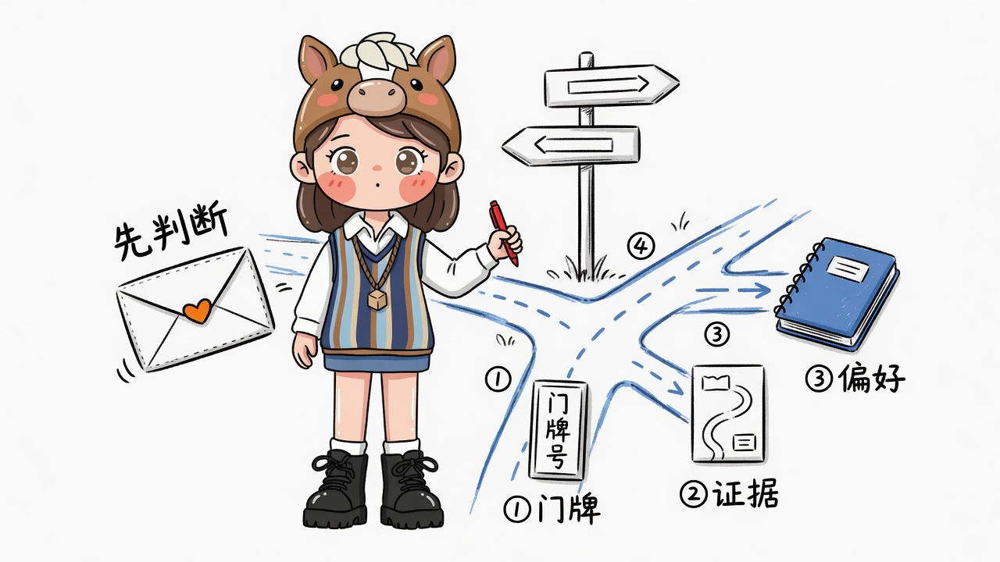
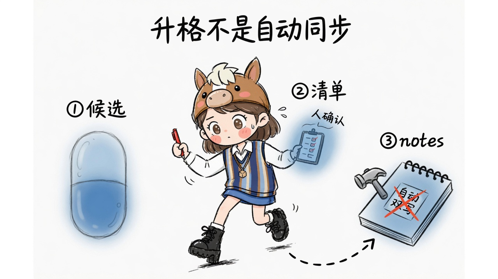

記憶三層架構
knowledge-hub（SoR）· rag-memory-lab（證據檢索）· Memory River（工作記憶）· 遠端基建 · 宿主 Grok

配圖 · gimi-illustration · SoR / 證據 / 工作記憶 · 禁止混存
Agent
Hub SoR
RAG
River
遠端基建
1. 系統總覽
Agent Grok
- 唯一宿主
- 查詢路由
- 升格 checklist
- skill: memory-layers-promote
📘 knowledge-hub · SoR
J:\grok\34\knowledge-hub\notes · bird · weekly
- 人可編的唯一真相
- build.ps1 / query.ps1（門牌）
- NotebookLM 是複本
🔎 rag-memory-lab · 證據檢索
J:\grok\34\rag-memory-lab\artifacts\workspace
- Chunk → FTS5/BM25 → 向量 → RRF
- 只回 path + 摘錄（不生成答案）
- 索引可丟可重建
🌊 Memory River · 工作記憶
mr-serve 127.0.0.1:4791 · data @ %USERPROFILE%\.memory-river
- 偏好 / 約定 / 決策 / 對話蒸餾
- LanceDB 本機 NTFS（勿用 J:）
- 非 Postgres 主存
Remote 100.88.220.82
- :11434 Ollama embed
qwen3-embedding:0.6b - :8080/v1 Chat Completions
qwen3.6 - :5432 PostgreSQL
memory_ops（可選佇列） - :5050 Adminer
本機 Ollama 已移除。River 只依賴遠端 embed。
2. 讀寫資料流
Write 成稿
- 人 / Grok 寫 notes
- BIRD 拆門牌 → bird/*
- build.ps1 → bird-index
- 可選 index_workspace.py
Read 找知識
- 先門牌 B / I.K
- 再 rag hybrid 證據卡
- 生成可選打 :8080
Session 工作記憶
- POST /store · /recall
- embed → 遠端 :11434
- 值得留 → 升格 notes
River / 對話 claim
→
Grok checklist（5 項全 Yes）
→
hub notes（SoR）
→
build.ps1 ± rag reindex
升格單向、人確認；禁止 notes bulk 灌 River；禁止自動雙向 sync。
3. Grok 查詢路由

①門牌 · ②證據 · ③偏好 · 先判斷
| 問題型 | 主路徑 | 落地 |
|---|---|---|
| 庫裡有什麼／我寫過 | Hub | bird-index · query.ps1 · 先門牌 |
| 原文怎麼說／要證據 | RAG | query_workspace.py hybrid |
| 上次怎麼約／偏好 | River | POST /recall · 不夠 rehydrate |
| 兩邊都可能 | River → RAG | 衝突時 hub 成稿 > River > 臆測 |
3b. 升格（River → hub）

①候選 · ②清單 · ③notes · 人確認 · 禁止自動雙寫
4. 部署拓撲（本機 vs 遠端）
本機 Windows
- Grok 對話
- knowledge-hub / rag-memory-lab
- mr-serve :4791（loopback only）
- LanceDB data（C: 本機 NTFS）
- ❌ 無本機 Ollama
Tailscale · 100.88.220.82
- Ollama embed :11434
- Chat LLM :8080
- PostgreSQL :5432
- Adminer :5050
信任邊界
- mr-serve 僅 127.0.0.1
- 勿 reverse-proxy 對外
- PG 密碼勿進 git
- River ≠ SoR
5. 檔案索引
| 檔案 | 用途 |
|---|---|
| docs/memory-layers.md | 邊界與鐵律（文字 SoR） |
| docs/memory-layers-architecture.md | 本架構的 Markdown 版（含 Mermaid） |
| docs/memory-layers-architecture.html | 本頁視覺總覽 |
| .local/memory-river/start-mr-serve.ps1 | 啟動 daemon |
| skills/memory-layers-promote/ | Grok 路由 + 升格 skill |
| %USERPROFILE%\.memory-river\ | River config + LanceDB |